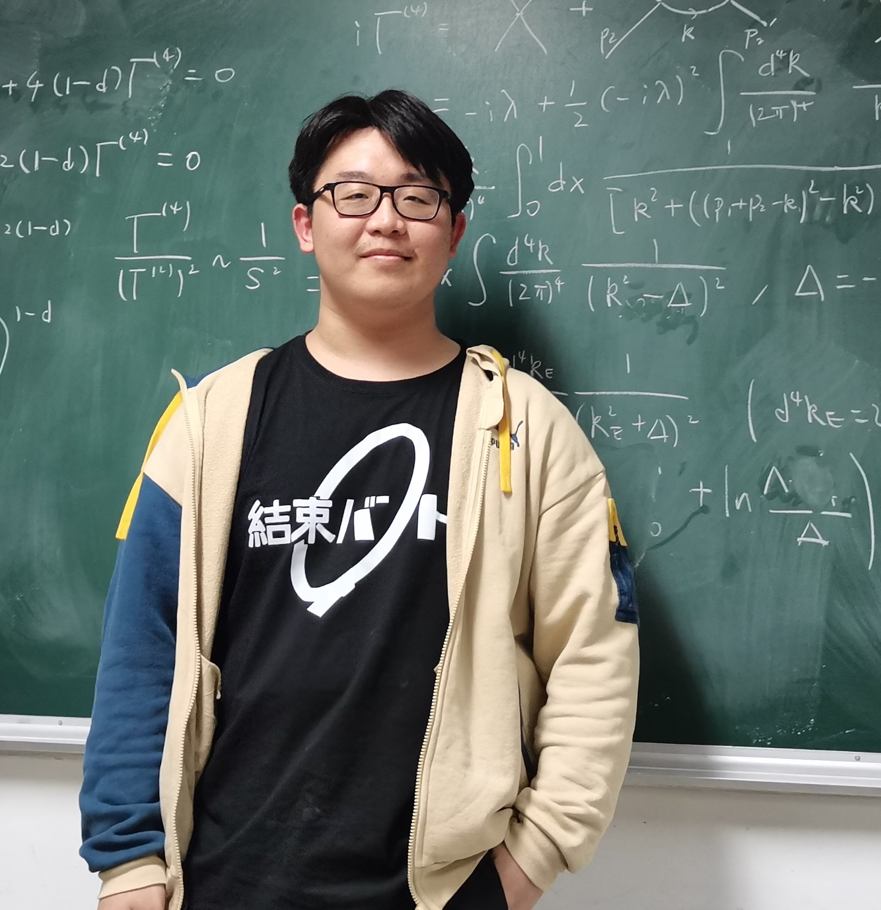

I'm an undergraduate student at the department of physics, Tsinghua University, since 2021.
Currently I'm interested in the basic structure of quantum field theories and its application to quantum gravity, condensed matter physics and cosmology. I'm now studying in the Tsinghua particle theory group under the instruction of Zhongzhi Xianyu, and I'm also taking part in a reading course about condensed matter field theory.